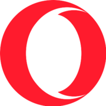

Logos and favicons belong to their owners and are shown here for reference. This is not an endorsement and it is not a license to use the mark.
Opera is the browser at opera.com. The red “O” in the tab is the favicon for the download page, distinct from the Opera GX variant unless that is the file the host returned.
Checked 12 November 2026 against opera.com. HTML came from https://www.opera.com/ (HTTP 200). Icon link tags: apple-touch-icon → https://cdn-production-opera-website.operacdn.com/staticfiles/assets/images/favicon/opera/apple-touch-icon.91bbceaeaa8a.png; apple-touch-icon 180x180 → https://cdn-production-opera-website.operacdn.com/staticfiles/assets/images/favicon/opera/apple-touch-icon-180x180.91bbceaeaa8a.png; apple-touch-icon 167x167 → https://cdn-production-opera-website.operacdn.com/staticfiles/assets/images/favicon/opera/apple-touch-icon-167x167.6a07d1e49b1a.png; apple-touch-icon 152x152 → https://cdn-production-opera-website.operacdn.com/staticfiles/assets/images/favicon/opera/apple-touch-icon-152x152.0dbf2a999304.png; apple-touch-icon 120x120 → https://cdn-production-opera-website.operacdn.com/staticfiles/assets/images/favicon/opera/apple-touch-icon-120x120.d243dfff693b.png; apple-touch-icon 76x76 → https://cdn-production-opera-website.operacdn.com/staticfiles/assets/images/favicon/opera/apple-touch-icon-76x76.f70874da6c7d.png. 5 more are in the table below.
The favicon.ico URL is https://cdn-production-opera-website.operacdn.com/staticfiles/assets/images/favicon/opera/favicon.18388eb39bfd.ico. The saved file favicon.ico is 4286 bytes. Directory sizes: 32×32.
The apple-touch-icon URL is https://cdn-production-opera-website.operacdn.com/staticfiles/assets/images/favicon/opera/apple-touch-icon-180x180.91bbceaeaa8a.png, measured at 180×180 png.
Brand colour #ff1b2d comes from the theme-color meta tag.
Largest measured bitmap: png-180x180-01.png at 180×180 (png, 4117 bytes) from https://cdn-production-opera-website.operacdn.com/staticfiles/assets/images/favicon/opera/apple-touch-icon-180x180.91bbceaeaa8a.png.
Saved facts
favicon.ico URL: https://cdn-production-opera-website.operacdn.com/staticfiles/assets/images/favicon/opera/favicon.18388eb39bfd.ico
apple-touch-icon URL: https://cdn-production-opera-website.operacdn.com/staticfiles/assets/images/favicon/opera/apple-touch-icon-180x180.91bbceaeaa8a.png

Brand colour #ff1b2d — theme-color meta tag.
Preview
The preview uses the static snapshot png-180x180-01.png, measured at 180×180. The boxes scale that same saved file in the browser. They are not extra downloads and they do not call the favicon API.

Download
Every button is a file saved from the live response on the check date. Nothing here was resized on a server, and the buttons point at those static files.
png-180x180-01.png png-167x167-02.png png-152x152-03.png png-120x120-04.png png-76x76-05.png png-57x57-06.png favicon.ico


Files and measured dimensions


Link tags found


Manifest icons as declared
These sizes are the strings in the manifest. They are not a measurement unless the same URL was downloaded and appears in the file table.


How this compares with a normal favicon set
A site you publish yourself usually needs a different set from the one Opera happens to ship: 16×16, 32×32 and 48×48 in one favicon.ico, a 180×180 apple-touch icon, and 192×192 plus 512×512 manifest PNGs. That chart, including 96×96, maskable icons, Windows tiles and SVG, is the favicon dimensions guide. Use Opera ’s files as a reference, then build your own with the PNG to favicon converter.
Related site icons
- Oracle favicon (oracle.com)
- Salesforce favicon (salesforce.com)
- Samsung favicon (samsung.com)
- Tesla favicon (tesla.com)
- Adobe favicon (adobe.com)
- AMD favicon (amd.com)
FAQ
What is the Opera favicon.ico URL?
Yes. favicon.ico (4286 bytes) from https://cdn-production-opera-website.operacdn.com/staticfiles/assets/images/favicon/opera/favicon.18388eb39bfd.ico. Directory sizes: 32×32.
What are the Opera favicon dimensions?
The pixel sizes below were read from the files, not from a generic size chart. png-180x180-01.png: 180×180 (PNG IHDR) png-167x167-02.png: 167×167 (PNG IHDR) png-152x152-03.png: 152×152 (PNG IHDR) png-120x120-04.png: 120×120 (PNG IHDR) png-76x76-05.png: 76×76 (PNG IHDR) png-57x57-06.png: 57×57 (PNG IHDR) favicon.ico: 32×32 (ICO directory)
What apple-touch-icon does Opera publish?
Yes. https://cdn-production-opera-website.operacdn.com/staticfiles/assets/images/favicon/opera/apple-touch-icon-180x180.91bbceaeaa8a.png saved as png-180x180-01.png.
What brand colour does the Opera favicon page record?
#ff1b2d, from the theme-color meta tag.
Which icon files were saved for Opera?
On 12 November 2026 these image files were downloaded for opera.com: png-180x180-01.png (png, 4117 bytes, 180×180); png-167x167-02.png (png, 3686 bytes, 167×167); png-152x152-03.png (png, 3491 bytes, 152×152); png-120x120-04.png (png, 2867 bytes, 120×120); png-76x76-05.png (png, 1944 bytes, 76×76); png-57x57-06.png (png, 1561 bytes, 57×57); favicon.ico (ico, 4286 bytes, 32×32).
May I use the Opera icon on my own site?
No. Logos and favicons belong to their owners and are shown here for reference so you can see the real format and dimensions. For your own site, make a file with the PNG to favicon converter or download a site you control.
Look up another domain in the favicon downloader, fetch several at once with the bulk favicon downloader, or go back to the site favicon index.